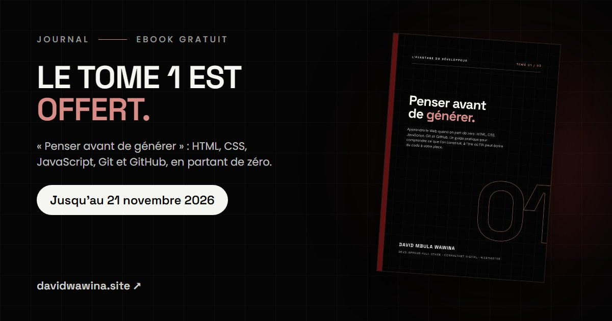

Le tome 1 de « L'avantage du développeur » est offert
Du 21 octobre au 21 novembre 2026, téléchargez gratuitement « Penser avant de générer », le premier tome de ma série d'ebooks pour apprendre le développement à l'ère de l'IA.

L'intelligence artificielle peut écrire une page Web en quelques secondes. Alors, à quoi bon apprendre à coder ?
C'est la question qu'on me pose le plus souvent. Ma réponse tient en une phrase : un développeur ne devient pas professionnel parce qu'il produit beaucoup de code, mais parce qu'il comprend ce qu'il produit. C'est pour ça que j'ai écrit la série « L'avantage du développeur à l'ère du code généré ».
Et pour la lancer, je vous offre le premier tome.
Le tome 1 est gratuit jusqu'au 21 novembre
Du 21 octobre 2026 au 21 novembre 2026, le tome 1, « Penser avant de générer », est à télécharger gratuitement, sans inscription.
Télécharger le tome 1 gratuitement
Ce que vous apprendrez dans le tome 1
Ce livre s'adresse à celles et ceux qui partent de zéro, même avec un simple smartphone. Chaque notion suit la même logique : une définition simple, une explication, un exemple, puis de la pratique.
- Construire une vraie page avec HTML, la rendre belle et responsive avec CSS.
- Lui donner vie avec JavaScript : clics, formulaires, thème clair et sombre.
- Suivre l'histoire de votre code avec Git et le publier sur GitHub.
- Apprendre avec l'IA sans perdre votre avantage.
- Un parcours de 30 jours et un portfolio en ligne à la fin du livre.
La suite de la série
Une fois les bases en place, deux autres tomes vous attendent :
- Tome 2 · Construire avec plus de méthode : environnement, back-end, données, API, tests, sécurité et mise en production.
- Tome 3 · Rester indispensable à l'ère de l'IA : comprendre les assistants de code, formuler des demandes précises, auditer le code généré et garder la responsabilité des décisions.
Les prix des tomes 2 et 3
Vous avez deux possibilités :
- Les tomes 2 et 3 ensemble : 20 $ au lieu de 25 $.
- Un seul tome (le 2 ou le 3) : 12,5 $ le tome.
La commande et le paiement se font sur WhatsApp. Le PDF vous est envoyé dès que le paiement est confirmé.
Pourquoi je l'offre
Parce que je veux que vous puissiez juger par vous-même. Lisez le tome 1, faites les exercices, construisez votre premier portfolio. Si la méthode vous aide, les tomes suivants vous emmèneront plus loin.
Comprendre d'abord. Construire ensuite. Utiliser l'IA pour aller plus vite, jamais pour penser à votre place.
Une question sur la série ? Écrivez-moi sur WhatsApp.